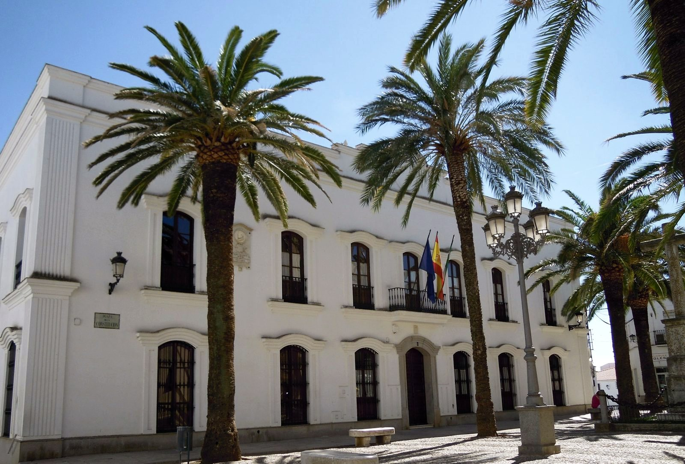
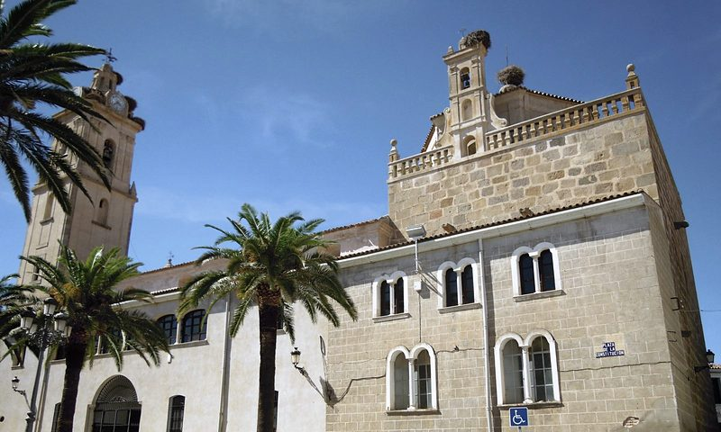
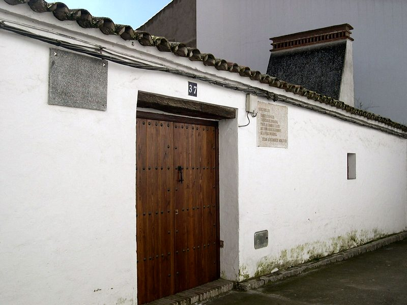
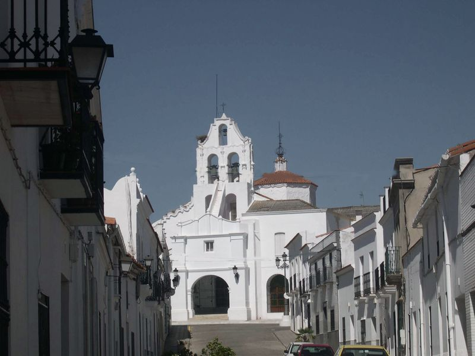
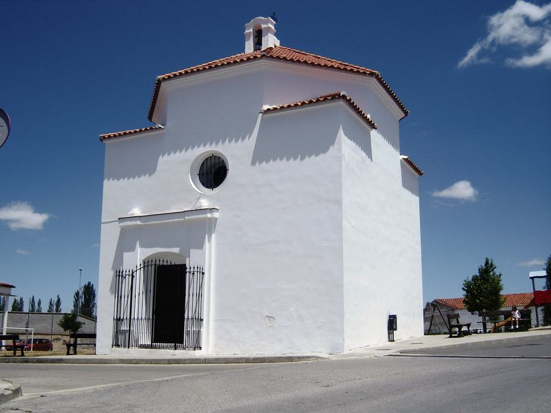
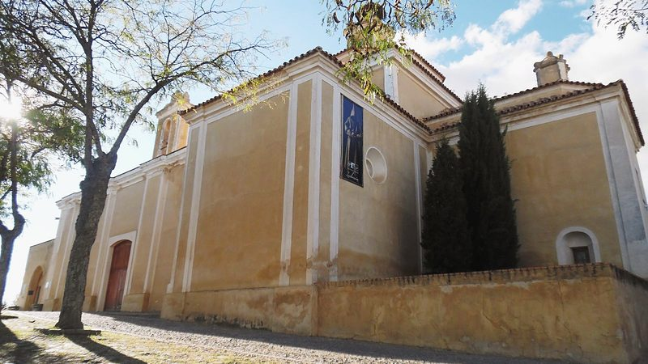
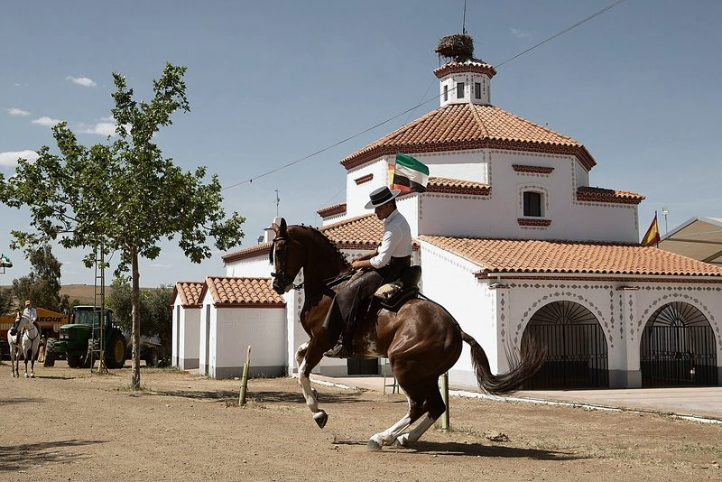
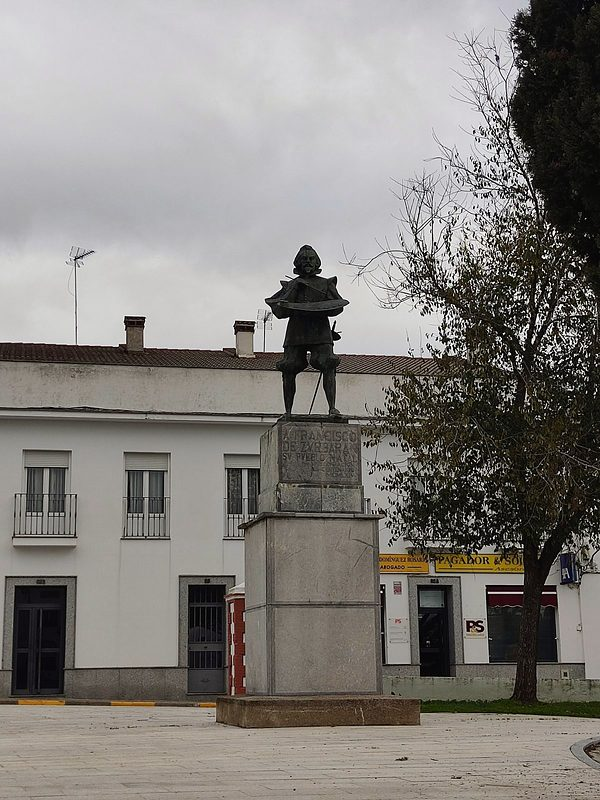
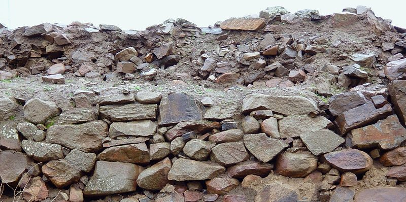
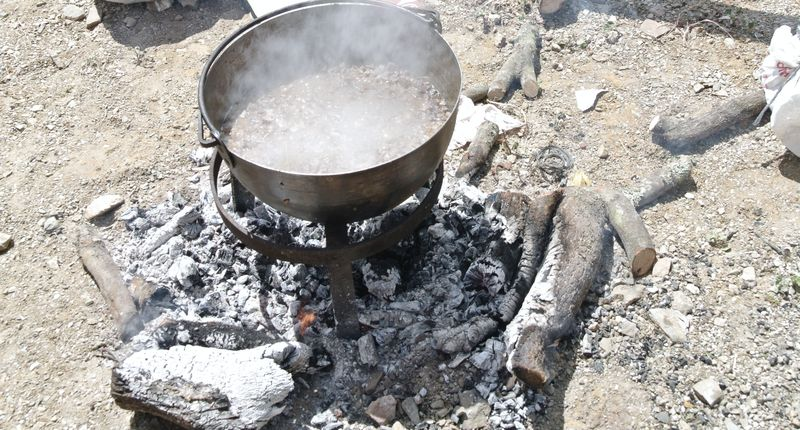

El pueblo
Camino de Sevilla, en la Vía de la Plata, donde empiezan las estribaciones de Sierra Morena. La villa donde nació Francisco de Zurbarán.

Qué ver
-

Parroquia de Nuestra Señora de la Granada
Bien de Interés Cultural. Guarda la pila bautismal del siglo XVI en la que se bautizó Zurbarán.
Foto: stavros1 (Wikimedia Commons) · CC BY 3.0
-

Casa natal de Zurbarán
En la calle Águilas. Rehabilitada en 2014, con seis salas sobre el pintor y su época.
Foto: web del Ayuntamiento
-

Santuario de la Hermosa
El santuario de la patrona, del siglo XV, reformado en el XVIII.
Foto: web del Ayuntamiento
-
Casa Consistorial
En la Plaza de la Constitución, entre palmeras.
Foto: stavros1 (Wikimedia Commons) · CC BY 3.0
-

Ermita de San Juan de Letrán
Nació como hospital en 1515. Es una de las dos ermitas que se pueden visitar.
Foto: web del Ayuntamiento
-

Convento de San Diego
Franciscano, con la iglesia terminada en 1624. Hoy acoge actos culturales.
Foto: web del Ayuntamiento
-

Ermita de San Isidro
En la pradera de la romería, a las afueras.
Foto: Rene112233, foto de Jorge Armestar (Wikimedia Commons) · CC BY-SA 4.0
-

Monumento a Zurbarán
El pintor, en bronce y con su paleta, en el parque que lleva su nombre.
Foto: Gonzalo 11789 (Wikimedia Commons) · CC0
-

Los Castillejos
Yacimiento con murallas del Calcolítico y de la Edad del Hierro, junto a la carretera de Fregenal.
Foto: web del Ayuntamiento
El término en un mapa
Lugares del mapa
- Parroquia de Nuestra Señora de la Granada
- Casa natal de Zurbarán
- Santuario de la Hermosa
- Casa Consistorial
- Ermita de San Juan de Letrán
Cómo leerlo
- Límite del término municipal (línea discontinua)
- El pueblo (área sombreada)
- Carreteras (línea gruesa): A-66, BA-040, BA-067, BA-068, BA-069, BA-145, EX-202 y N-630
- Rutas (línea de puntos): Vía de la Plata hiking - 01 Sevilla to Merida y EV1
- Círculo con número: un lugar de la lista
- Escala: la barra de abajo mide 5 km
- Recuadro: el pueblo ampliado; su barra mide 500 m
- Raya fina con un punto: el sitio exacto, cuando el número se ha apartado para que se lea
Para visitar
-
Casa natal de Francisco de Zurbarán
Seis salas sobre el pintor, su obra y su tiempo, y el patio. Visita libre con audioguía o guiada en grupo. No guarda obra original.
- Dirección
- C/ Águilas, 37
- Entrada
- Gratuita
El horario no está publicado: pregúntelo en la Oficina de Turismo.
-
Centro de Interpretación Museo de Zurbarán y Oficina de Turismo
Información turística del pueblo y de la comarca.
- Dirección
- Plaza de la Constitución (antigua Casa de Correos)
El horario cambia según la temporada: pregúntelo por teléfono.
Llamar a Centro de Interpretación Museo de Zurbarán y Oficina de Turismo: 924 580 380
-
Museo del Flamenco «Yerga Lancharro»
El archivo del investigador Manuel Yerga Lancharro (Montemolín, 1923), que se crió en Fuente de Cantos, cedido por su familia: grabaciones, cartas, fotografías y documentos sobre el cante.
Visitas con cita previa.
-
Museo Julián González García
Veintisiete esculturas donadas por el artista, Hijo Predilecto de la villa.
Historia
Los cerros de Los Castillejos, junto al pueblo, estuvieron habitados desde el Neolítico hasta la época romana. La zona era paso obligado entre Mérida y el valle del Guadalquivir.
El nombre de Fuente de Cantos aparece con la conquista cristiana, hacia 1240. El primer documento del archivo municipal es de 1293. La villa perteneció a la Encomienda santiaguista de Montemolín, después fue de realengo y en el siglo XIX fue cabeza de partido judicial.
Aquí nació el pintor Francisco de Zurbarán: fue bautizado en la parroquia el 7 de noviembre de 1598. Ninguna de sus más de 600 obras catalogadas se conserva hoy en el pueblo, pero su casa natal se puede visitar.
El término municipal tiene 251,8 km² y el pueblo está a 582 metros de altitud, entre viñedos, olivares, dehesa y trigales. Pertenece a la comarca de Tentudía y al partido judicial de Zafra.
Patrimonio
- Parroquia de Nuestra Señora de la GranadaBien de Interés Cultural desde 1990. El cubo de la torre vieja es del siglo XV, la sacristía del XVI y la nave del XVIII. Guarda la Virgen de la Granada, del XVI, una imagen de San Roque, el patrón, y la pila bautismal de mármol en la que se bautizó Zurbarán.
- Santuario de Nuestra Señora de la HermosaDel siglo XV, reformado en el XVIII. Dentro, un lienzo americano del Cristo de la Encina y «La Aparecida», talla gótica del XIV.
- Convento de las Carmelitas DescalzasFundado en 1649 por Juan de Escobar del Corro. Retablo mayor de Juan Martínez de Vargas (1675).
- Convento de San DiegoFranciscano. La iglesia se terminó en 1624 y el convento se suprimió en 1835. Conserva la capilla del Corazón de Jesús.
- Ermita de San Juan de LetránEn la calle Almenas. Nació como hospital en 1515.
- Ermita de la AuroraSin culto. Conserva su espadaña barroca.
- Ermita de San IsidroEn la pradera donde se celebra la romería.
- Casa de los Panea y Plaza de ZurbaránLa casa de los Panea, «Casa Perrete», y la plaza modernista con el monumento al Corazón de Jesús.
- Antigua fábrica harineraDe principios del siglo XX, en la calle Real. Edificio protegido.
- Yacimiento de Los Castillejos I y IIDel Neolítico a la época romana, con muralla calcolítica y muralla de la Edad del Hierro.
- Colonias de cernícalo primillaEl casco urbano es Zona de Especial Protección para las Aves.
- Artesanía camperaCazuelas y cucharas de madera, cucharas de asta, botas camperas y chozos.
Fiestas
Enero
Sin fiestas señaladas
Febrero
- CarnavalFebrero o marzo, con las comparsas en el Teatro Municipal
Marzo
Sin fiestas señaladas
Abril
- Fiesta de la Chanfaina Fiesta mayorÚltimo fin de semana de abril. Fiesta de Interés Turístico de Extremadura
Mayo
- Romería de San Isidro Fiesta mayor15 de mayo. Fiesta de Interés Turístico de Extremadura
Junio
- Fiesta de San JuanSábado más próximo al 24 de junio, en el barrio de San Juan
Julio
Sin fiestas señaladas
Agosto
- Fiestas del Jubileo y San RoqueDel 14 al 18 de agosto; San Roque, el patrón, el 16
Septiembre
- Nuestra Señora de la Hermosa Fiesta mayor8 de septiembre, fiestas patronales
Octubre Este mes
- Otoño FlamencoOctubre, en el Teatro Municipal
Noviembre
- Premio Internacional de Pintura «Francisco de Zurbarán»Noviembre
Diciembre
Sin fiestas señaladas
Gastronomía
Platos
- Chanfaina de cordero
- Caldereta
- Migas
- Gazpacho
- Cocido extremeño
- Espárragos trigueros
- Setas
- Productos del cerdo ibérico
Dulces
- Perrunillas
- Bollitas de chicharrones
- Piononos

Personajes
Francisco de Zurbarán
1598-1664
Pintor del Siglo de Oro. Bautizado en la parroquia de Fuente de Cantos, se formó en Sevilla y se estableció en Llerena en 1617.
Nicolás Megía
1845-1917
Pintor. Medalla en 1890 por «La defensa de Zaragoza». Da nombre a una calle, un parque y la escuela infantil.
Juan de Escobar del Corro
Siglo XVII
Fundó en 1649 el colegio que dio origen al convento de las Carmelitas Descalzas.
Rutas
Vía de la Plata: Fuente de Cantos - Zafra
24 km entre olivares y campos de cereal, con pueblos con servicios a los 6 y a los 20 km.
Fuente El Lobo
17 km, dificultad baja. Desde la Plaza de Colón por La Senda hasta la fuente; vuelta por el camino de Bienvenida.
La Cañada Real - La Senda
14 km, dificultad media. Por la ermita de San Juan y la Cañada Real hasta el cerro Cabeza Gorda.
Las Zorrillas
17 km, dificultad media. Por el camino de Monesterio y la vereda de los Carboneros.
Cortijo Palominos
22 km, dificultad media. Por el camino de Monesterio hasta Las Zorrillas; vuelta por el Camino de Santiago.
Las Horneras
23 km, dificultad media. Por la vereda de los Carboneros; vuelta por el camino de Bienvenida.
Las Talliscas - Bodión - El Risco
20 km, dificultad media. Por el camino de Valencia del Ventoso hasta el río Bodión.
La Argamasa
33 km, dificultad media. Por el Camino de Santiago y Calzadilla; vuelta por la Vía de la Plata.
Créditos de las fotos
- Convento de San Diego: web del Ayuntamiento. Solo para la propuesta: hace falta su autorización para publicarla
- Plaza y torre de la parroquia (portada): Sergueibubu (Wikimedia Commons), CC0 (ficha de la foto). Con gradación de color propia
- Santuario de Nuestra Señora de la Hermosa: web del Ayuntamiento. Solo para la propuesta: hace falta su autorización para publicarla
- Ermita de San Juan de Letrán: web del Ayuntamiento. Solo para la propuesta: hace falta su autorización para publicarla
- Parroquia de Nuestra Señora de la Granada: stavros1 (Wikimedia Commons), CC BY 3.0 (ficha de la foto). Recortada y con gradación de color propia
- Casa natal de Francisco de Zurbarán: web del Ayuntamiento. Solo para la propuesta: hace falta su autorización para publicarla
- Casa Consistorial: stavros1 (Wikimedia Commons), CC BY 3.0 (ficha de la foto). Recortada y con gradación de color propia
- Ermita de San Isidro: Rene112233, foto de Jorge Armestar (Wikimedia Commons), CC BY-SA 4.0 (ficha de la foto). Con gradación de color propia
- Estatua de Zurbarán: Gonzalo 11789 (Wikimedia Commons), CC0 (ficha de la foto). Con gradación de color propia
- Yacimiento de Los Castillejos: web del Ayuntamiento. Solo para la propuesta: hace falta su autorización para publicarla
- Caldero de chanfaina: web del Ayuntamiento. Solo para la propuesta: hace falta su autorización para publicarla